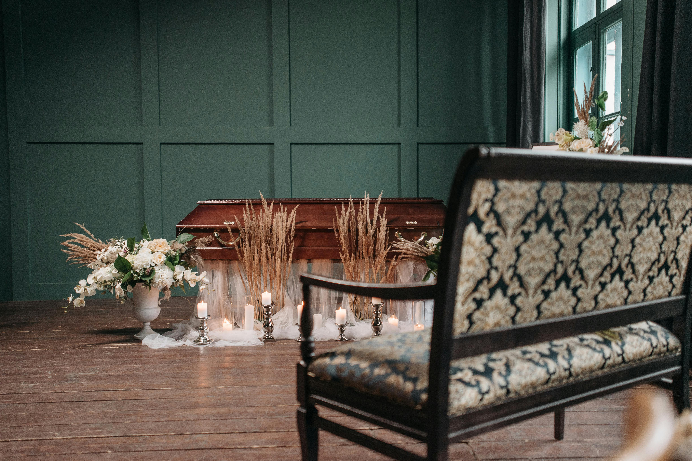

Quem Somos
A Funerária Vita Serena é referência em acolhimento e respeito em Criciúma e região. Nossa missão é oferecer suporte integral em momentos delicados, com empatia e eficiência.
Com uma equipe dedicada e altamente treinada, atuamos com responsabilidade, ética e discrição em cada atendimento. Estamos preparados para orientar famílias, preservar memórias e assegurar a tranquilidade necessária para atravessar cada etapa do processo.
Missão
Oferecer suporte integral e acolhimento às famílias...
Nossos Valores
Cada ação que tomamos é guiada por princípios sólidos, que refletem nosso compromisso com quem mais precisa de apoio, acolhimento e dignidade.
Empatia
Escutamos com sensibilidade e agimos com respeito em cada situação.
Ética
Atuamos com integridade, honestidade e conformidade total com os regulamentos e boas práticas do setor.
Respeito
Reconhecemos a diversidade e tratamos cada família com cuidado, sem julgamentos ou estereótipos.
Transparência
Prestamos contas com clareza, oferecemos informações acessíveis e mantemos uma comunicação aberta desde o primeiro contato.
Esses valores não são apenas palavras — são ações vividas todos os dias por nossa equipe.
Nossa Estrutura
Ambientes pensados para acolher com privacidade, serenidade e respeito. Conheça nossos espaços:

Confiança e Compromisso em Nossos Atendimentos
Com milhares de famílias atendidas e forte presença regional, a Funerária Vita Serena se consolida como referência em cuidado, respeito e acolhimento. Cada serviço prestado reflete nosso compromisso com a dignidade em momentos que exigem sensibilidade e apoio verdadeiro.
+10.000
Famílias atendidas com acolhimento
98%
Índice de satisfação em pesquisas locais
24h
Pronto atendimento, todos os dias
★4.9
Avaliação média em plataformas públicas